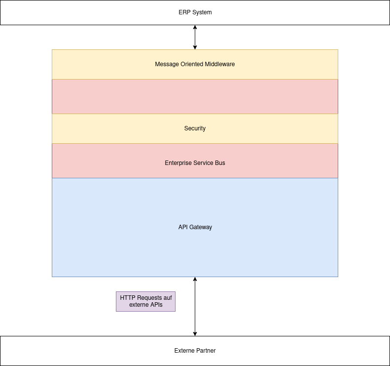

Systemarchitektur und Schnittstellentechnologie
Komponenten Diagramm

Webshop
Der Webshop ist die Kernkompetenz des Startups und wird von uns direkt betreut. Er dient dem Kunden dazu, seine Bestellung aufzugeben, dabei gibt er seine Daten in die entsprechenden Felder ein. Die zur Verfügung gestellten Produkte werden dem Produktsystem entnommen. Über einen weiterführenden Link können Detailinformationen zum Material angezeigt werden. Der Webshop bietet auch eine Schnittstelle zum Lager und Lieferzeit des Lieferanten, so ist es für die Kundschaft möglich diese Informationen, verlässlich und in Echtzeit zu erhalten. Dies dient auch dazu, die Umsetzbarkeit zu Prüfen. Die Benutzerinformationen und Informationen über den Pullover werden von unserem Frontend (Webshop) an unser internes Bestellsystem weitergeleitet. Das interne ERP System ist der Dreh- und Angelpunkt unserer Anwendung.
ERP SystemDas ERP System zieht aus verschiedensten Datenbanken und externen Schnittstellen Daten zusammen und zeigt diese in spezifischen Ansichten an. Das ERP System fungiert zudem als eine zentrale Bestellübersicht.
KundenverwaltungssystemIn dieser Datenbank stecken sämtliche Informationen zu einem spezifischen Kunden.
ZahlungssystemDer Zahlungsvorgang wird von einem Partnerunternehmen ausgeführt. Dieses meldet die erfolgreiche Bezahlung an unser Zahlungssystem, welches den Auftrag zur Auslieferung freigibt. Bei offener Zahlung wird der Auftrag zurück behalten.
ProduktsystemIn diesem System sind Produktdaten hinterlegt, von Produkten, welche wir auf unserem Webshop den Kunden zur Verfügung stellen.
Lieferanten & HerstellungssystemDarin werden die Informationen über die Firmen gespeichert mit welchen wir zusammenarbeiten.
Enterprise Service BusDie vertraulichen Daten werden über einen Enterprise Service Bus verschlüsselt übertragen. Die Partner erhalten nur diejenigen Informationen, welche für sie relevant sind. Dieser separierte Aufbau macht es uns möglich, schnell und agil zu reagieren, falls einer der Partner abspringen sollte.
Produktionspartner / Druckpartner externDieser externe Partner erhält von uns alle für ihn relevante Informationen um die Produktion, bzw. den Logodruck zu handhaben, dazu gehören:
- Materialinformationen
- Mengenangabe
- Grösse und Logo
Die bestellten Pullover werden reserviert und bei uns an Lager behalten bis sie in den Druck gehen um eine fristgerechte Lieferung zu garantieren.
Lieferungspartner externDer Lieferant erhält von uns über den Enterprise Service Bus alle relevanten Informationen für eine erfolgreiche Lieferung, dazu gehören:
- Lieferadresse
- Liefermenge
- Lieferdatum
Um mit unseren externen Partnern (Produzenten, Lieferanten etc.) zu kommunizieren, verwenden wir einen Enterprise Service Bus. Wir beziehen den Enterprise Service Bus über die Cloud. Ein bekannter Anbieter hierfür ist der Azure Service Bus, welcher von Microsoft angeboten wird.
Wir haben uns aus folgenden Gründen für einen Enterprise Service Bus entschieden:
- Leichter Austausch von Komponenten (unsere externen Partner)
- Da die Kommunikation mit den externen Partnern über einen Bus verläuft, können wir leichter datenschutztechnische Massnahmen implementieren. Diese Massnahmen müssen nur an einer zentralen Stelle implementiert werden
- Ein Enterprise Service Bus macht auch Dinge wie Ressourcen Skalierung (Load Balancing), sowie Fehlerbehandlung (im Falle, dass einer unserer externer Services ausfällt)
- Ein Enterprise Service Bus kann mit Hilfe von Middlewares um beliebige Funktionalitäten erweitert werden
Jedoch gibt es auch einige Nachteile welche wir beachten müssen:
- Wir haben einen Single Point of Failure, wenn unser Enterprise Service Bus aussteigt, haben wir diverse Probleme. Auf dieses Szenario müssen wir uns gut vorbereiten
- Da wir zusätzlich eine Schnittstelle zwischen uns und den externen Partnern haben, kann dies unter Umständen zu Performance Problemen führen. Hier ist es wichtig, nur die notwendigsten Daten zu verschicken, um die Bandbreite nicht unnötig zu strapazieren
Grundsätzlich gelangen all unsere Daten in den Enterprise Service Bus. Dort werden sie von der Message Oriented Middleware entgegengenommen und anschliessend über eine definierte API (Application Programming Interfaces) unseren externen Partnern zur Verfügung gestellt. Natürlich müssen auch unsere Partner in der Lage sein, mit unseren Services zu kommunizieren. Hier kommt ein API Gateway ins Spiel. Dieser sorgt dafür, dass wir nur die relevanten APIs öffentlich machen. Ein Lieferant braucht so zum Beispiel nicht die gleichen API befehle wie ein Produzent etc. Über den API Gateway können wir bestimmen, wer was sieht. Natürlich ist auch die Sicherheit der Daten von zentraler Bedeutung. Wie bereits erwähnt, kann der Enterprise Service Bus um sogenannte Middlewares ergänzt werden. Einer dieser Middleware ist bei uns für die Sicherheit der Daten zuständig. Grundsätzlich kann gesagt werden, dass wir mit unseren externen Partnern nur über definierte API kommunizieren. Bevor jedoch ein solcher Request abgesetzt wird, ist immer zuerst die Sicherheit zu prüfen, dies übernimmt unser Security Modul. Als Datenformat verwenden wir XML, da dies eine weit verbreitete Sprache ist, um Daten semantisch zu modellieren. Die externen APIs werden anschliessend via HTTP (GET / PUT / DELETE) Requests angesprochen. Wir erwarten von jedem unserer externen Partnern, dass eine solche API zur Verfügung steht, ein Beispiel wäre hier der Paypal (Zahlungsdienst)
